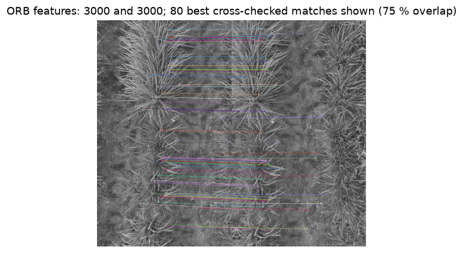
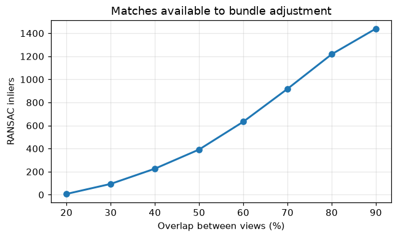

Structure-from-Motion (SfM) photogrammetry turns overlapping frames into three map products: an orthomosaic (a geometrically corrected image), a digital surface model (DSM, the top of everything, canopy included) and a digital terrain model (DTM, bare ground).
Overview
The difference between the surface and the bare ground is the canopy height model (CHM). This notebook explains the SfM steps on real LUMS frames, shows how to run OpenDroneMap (ODM) from Python with rs.uav.run_docker and rs.uav.run_nodeodm, and loads finished products with rs.uav.load_outputs, whether they come from ODM or from commercial software such as Agisoft Metashape (used in the LUMS paper).
Camera positions, orientations and lens model solved together with 3-D points
Lens model and camera height trade off: doming
4. Georeferencing
Model scaled and placed with GPS tags, GCPs or RTK
Consumer GPS: metres of absolute error
5. Dense matching
Depth for nearly every pixel: dense point cloud
Thin leaves, moving canopy
6. DSM / DTM
Highest (DSM) or ground-classified (DTM) points gridded
Ground hidden under full canopy
7. Orthomosaic
Images projected onto the DSM and blended
Seams, ghosting on tall plants
Steps 1 and 2 can be demonstrated directly on the data.
Features and matching on real frames
The public LUMS sample frames were picked from different parts of the field, so no two of them overlap. To see matching at work, the cell below makes two “views” from one frame: a left window and a right window that share a chosen fraction of their width, with the second view slightly rotated and rescaled as a drone would see it on the next pass. ORB features are then matched and a homography is fitted with RANSAC using rs.uav.estimate_homography.
Code
frame = rs.uav.to_rgb_array(rs.uav.read_frame(sorted((LUMS /"2025-08-22").glob("*.png"))[0], max_dim=1920))gray = cv2.cvtColor((frame *255).astype(np.uint8), cv2.COLOR_RGB2GRAY)H_img, W_img = gray.shapedef two_views(img, overlap, width=640, angle=4.0, scale=1.03):"""Two windows of `width` px sharing `overlap` of their width; the second rotated/scaled.""" shift_px =int(round(width * (1- overlap))) x0 = (img.shape[1] - width - shift_px) //2 a = img[:, x0:x0 + width] b_full = img[:, x0 + shift_px:x0 + shift_px + width] M = cv2.getRotationMatrix2D((width /2, img.shape[0] /2), angle, scale) b = cv2.warpAffine(b_full, M, (width, img.shape[0]), borderMode=cv2.BORDER_REFLECT)return a, ba, b = two_views(gray, 0.75)orb = cv2.ORB_create(3000)ka, da = orb.detectAndCompute(a, None); kb, db = orb.detectAndCompute(b, None)m =sorted(cv2.BFMatcher(cv2.NORM_HAMMING, crossCheck=True).match(da, db), key=lambda x: x.distance)[:80]vis = cv2.drawMatches(a, ka, b, kb, m, None, flags=cv2.DrawMatchesFlags_NOT_DRAW_SINGLE_POINTS)plt.figure(figsize=(12, 4.5)); plt.imshow(vis); plt.axis("off")plt.title(f"ORB features: {len(ka)} and {len(kb)}; 80 best cross-checked matches shown (75 % overlap)")plt.show()

Now vary the overlap. The number of RANSAC inliers (matches consistent with one geometric model) collapses as overlap falls, which is why mapping missions plan 75 to 85 % forward overlap.
Code
rows = []for ov in [0.9, 0.8, 0.7, 0.6, 0.5, 0.4, 0.3, 0.2]: a, b = two_views(gray, ov)try: _, info = rs.uav.estimate_homography(b, a, method="orb", n_features=3000)exceptRuntimeErroras e: # too few matches info = {"matches": 0, "inliers": 0, "rmse_px": np.nan} rows.append({"overlap_%": int(ov *100), **{k: info[k] for k in ("matches", "inliers", "rmse_px")}})ov_tab = pd.DataFrame(rows)display(ov_tab.round(2))fig, ax = plt.subplots(figsize=(6.5, 3.5))ax.plot(ov_tab["overlap_%"], ov_tab.inliers, "o-", lw=2)ax.set(xlabel="Overlap between views (%)", ylabel="RANSAC inliers", title="Matches available to bundle adjustment")ax.grid(alpha=0.3); plt.show()
overlap_%
matches
inliers
rmse_px
0
90
1488
1440
1.03
1
80
1264
1218
1.06
2
70
946
918
1.04
3
60
657
633
1.10
4
50
413
392
1.05
5
40
238
226
1.00
6
30
102
94
0.79
7
20
15
7
0.70

Repeated texture is the other enemy: rice rows look alike everywhere, so a feature can match the wrong row. Lowe’s ratio test (used inside estimate_homography) rejects a match when the second-best candidate is almost as good as the best one, and RANSAC removes the rest.
Ground control: GCP / RTK vs infrastructure-free
Approach
Absolute accuracy
Cost and effort
Typical artefact
GCPs surveyed with GNSS
1-3 cm
Targets laid and surveyed every flight
Little doming if GCPs cover the area
RTK / PPK drone
2-5 cm
RTK drone and base or correction service
Little doming
Consumer GPS only (LUMS)
metres
None
Doming / bowl and tilt in the DEM
The LUMS study used no GCPs and no RTK. Its orthomosaics are therefore internally consistent but not accurately placed on Earth, and its elevation models carried a dome-shaped error that was removed afterwards with RANSAC plane/polynomial fitting (notebook 09_04_06). For relative traits within a field (counts, cover, height above local ground) this is enough.
Running OpenDroneMap from Python
ODM is the open alternative to Agisoft Metashape and Pix4D. GeoLattice drives it two ways:
rs.uav.run_docker(project_dir, options=...) runs the opendronemap/odm image on project_dir/images and writes the products into project_dir.
rs.uav.run_nodeodm(images, out_dir, host=..., port=...) sends images to a NodeODM server (docker run -p 3000:3000 opendronemap/nodeodm), waits and downloads the results. Needs pip install pyodm.
The options mirror ODM’s command-line flags. For the LUMS 6 m frames a sensible start is:
Code
odm_options = {"dsm": True, "dtm": True, # build both elevation models"orthophoto-resolution": 0.2, # cm/px; about the frame GSD at 6 m"dem-resolution": 0.6, # cm/px; DEMs are noisier, so coarser"feature-quality": "high","pc-quality": "high","matcher-neighbors": 16, # video frames: many close neighbours"use-3dmesh": False, # 2.5-D mesh is better for flat fields"auto-boundary": True,}pd.Series(odm_options, name="value").to_frame()
value
dsm
True
dtm
True
orthophoto-resolution
0.2
dem-resolution
0.6
feature-quality
high
pc-quality
high
matcher-neighbors
16
use-3dmesh
False
auto-boundary
True
Code
project = OUT /"odm_lums_0822"if RUN_ODM: imgs = project /"images"; imgs.mkdir(parents=True, exist_ok=True)for f insorted((LUMS /"2025-08-22").glob("*.png")): # replace with an overlapping frame sequence shutil.copy(f, imgs / f.name)if shutil.which("docker"): rs.uav.run_docker(project, options=odm_options, gpu=False)else: rs.uav.run_nodeodm(sorted(imgs.glob("*.png")), project, host="localhost", port=3000, options=odm_options)else:print("RUN_ODM is False: skipping photogrammetry. The 10 public frames per date do not overlap,")print("so a real run needs an overlapping sequence (e.g. frames from rs.uav.extract_frames).")
RUN_ODM is False: skipping photogrammetry. The 10 public frames per date do not overlap,
so a real run needs an overlapping sequence (e.g. frames from rs.uav.extract_frames).
Expect ODM to need several GB of RAM per hundred 4K frames and tens of minutes on a laptop CPU; gpu=True uses the opendronemap/odm:gpu image for feature extraction.
Loading products: ODM layout or explicit paths
rs.uav.load_outputs(odm_dir) looks for odm_orthophoto/odm_orthophoto.tif, odm_dem/dsm.tif and odm_dem/dtm.tif. Metashape and Pix4D use other names, so explicit paths can be given instead (or in addition).
So that this section runs without a photogrammetry run, the cell below writes a small set of example products: an orthomosaic made from a LUMS frame, placed in UTM zone 43N at the LUMS field with 1.85 mm pixels, and a DSM/DTM pair built with rs.uav.synthetic_dem, which adds a realistic GCP-free dome and tilt. The DTM is written on a shifted grid of the same size, as happens when two products come from different exports.
Code
import rioxarray # noqa: F401 (registers the .rio accessor)from affine import Affinecrs ="EPSG:32643"# WGS 84 / UTM 43N (Lahore)x0, y0 =437_000.0, 3_481_500.0# an easting/northing near the LUMS campus (illustrative)ortho = rs.uav.read_frame(sorted((LUMS /"2025-08-22").glob("*.png"))[0], max_dim=1920)gsd_o =0.00185*3840/ ortho.sizes["x"] # GSD after downsizingortho = ortho.assign_coords(x=x0 + gsd_o * (np.arange(ortho.sizes["x"]) +0.5), y=y0 - gsd_o * (np.arange(ortho.sizes["y"]) +0.5)).rio.write_crs(crs)ortho_path = OUT /"example_ortho.tif"ortho.rio.to_raster(ortho_path)big_dsm, big_chm = rs.uav.synthetic_dem((184, 326), gsd=0.02, doming=0.8, canopy_height=0.5, seed=3)ground = big_dsm - big_chm # true (domed) ground surface on the large griddef place(da):"""Give a local-grid DataArray UTM coordinates."""return da.assign_coords(x=x0 + da.x.values, y=y0 + da.y.values).rio.write_crs(crs)dsm = place(big_dsm.isel(y=slice(0, 180), x=slice(0, 320))) # DSM export gridchm_true = big_chm.isel(y=slice(0, 180), x=slice(0, 320)).values # truth on the DSM griddtm = place(ground.isel(y=slice(2, 182), x=slice(3, 323))) # DTM export: same size, 3 x 2 px offsetdsm_path, dtm_path = OUT /"example_dsm.tif", OUT /"example_dtm.tif"dsm.rio.to_raster(dsm_path); dtm.rio.to_raster(dtm_path)print("DSM origin", float(dsm.x[0]), float(dsm.y[0]), "| DTM origin", float(dtm.x[0]), float(dtm.y[0]))print("wrote", ortho_path, dsm_path, dtm_path)
rs.uav.chm_from_surfaces checks CRS and grid alignment (not just the shape) and reprojects the DTM onto the DSM grid when they differ. Subtracting the raw arrays of the shifted pair would mix pixels 6 cm apart.
Two points stand out. First, the DSM is dominated by the dome, not the crop: notebook 09_04_06 removes it when no DTM exists. Second, an alignment error of a few centimetres shows up as bands of false height along every plot edge and a tilt-like bias wherever the ground slopes. Here alignment recovers the true heights exactly because the offset is a whole number of pixels; sub-pixel offsets leave a small interpolation error.
Summary and exercises
Key points
Structure-from-Motion matches features across overlapping frames, solves the cameras, and builds a dense cloud, a DEM and an orthomosaic.
Overlap decides whether neighbouring frames match. GCP or RTK fixes where the model sits on the ground.
run_docker and run_nodeodm launch OpenDroneMap. load_outputs opens an orthomosaic, DSM and DTM from ODM or from a Metashape export.
Canopy height is DSM minus DTM (chm_from_surfaces).
Repeat the overlap experiment with method="sift". Does SIFT keep more inliers at 40 %?
Increase angle in two_views to 20°. At what angle does matching fail at 75 % overlap?
Download the 2025-08-13 orthomosaic, set ORTHO_PATH and reload. What is its resolution and does it carry a CRS?
Shift the example DTM by a full 0.5 m and compare the two CHM RMSEs again.
References
Westoby, M. J. et al. (2012). ‘Structure-from-Motion’ photogrammetry: a low-cost, effective tool for geoscience applications. Geomorphology, 179, 300-314.
OpenDroneMap Authors. ODM: a command line toolkit to generate maps, point clouds, 3D models and DEMs from drone images. https://opendronemap.org
Chaudhry, H., Rana, S. and Jaleel, A. (2026). Computers and Electronics in Agriculture (accepted).